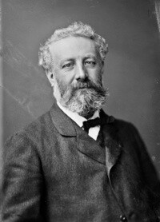

Жуль Верн
Французький письменник. Автор пригодницьких романів. Разом із Гербертом Уеллсом вважається засновником жанру наукової фантастики.
Про книгу письменника...Жуль Верн
Французький письменник. Автор пригодницьких романів. Разом із Гербертом Уеллсом вважається засновником жанру наукової фантастики.
Про книгу письменника...